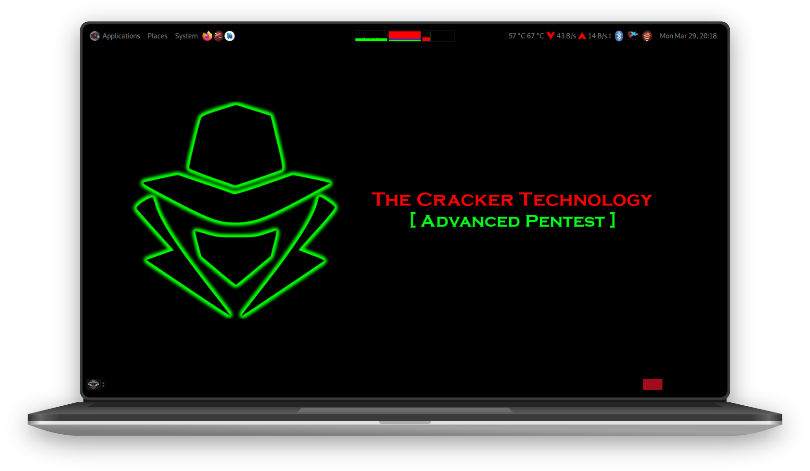

How to install ANDRAX?
ANDRAX Installation is so easy, every dumb like Offensive Security users can install it too!
Download ANDRAX
To start, Download ANDRAX from our Official WebSite
Only DOWNLOAD from OUR SITE!!!
Never Download ANDRAX from other source, ANDRAX is a Open Source Projects and anyone can create a malicious builds.
Malicious russian kids are spreading malware on 4pda saying that is "custom" ANDRAX builds, Only Download from Official WebSite
Install ANDRAX for Desktop

ANDRAX is now 100% Multiplatform! Our build for Personal Computers can be installed in top of any Linux distribution that you like!
Download ANDRAX-Desktop file from our Official WebSite
The installation process is pretty simple, just read the "HOW-TO-INSTALL.txt" file which have detailed instructions.
Install ANDRAX for Android
Download the file for ANDRAX Mobile, inside the file you will find the ANDRAX apk interface and the ANDRAX core file.
Extract the file using any "zip" extractor
Read the instructions in the file: "HOW-TO-INSTALL.txt"
Never exit from installation screen!
You must stay on the installation screen to prevent Android from closing ANDRAX
The installation process can take more than 1 hour, its depends of your internet speed and your device IO speed!
Now your ANDRAX installation will be done if everything is ok!
Root access notification (toast)
ANDRAX ask for root commands many... realy many times so a lot of toasts can appear in your screen, you can disable it on magisk config for ANDRAX.
Install ANDRAX For ARM Boards
ANDRAX for ARM boards like Raspberry pi support any board with the requirred space left and armv7l+ processor.
ANDRAX For ARM boards share the same core of ANDRAX for Android but use another type of installer and launcher.
To install just download the ANDRAX-Raspberry file and read the instructions file "HOW-TO-INSTALL.txt"
Learn Ethical Hacking
If you want to become a professional, join our Advanced Ethical Hacking Training: JOIN NOW!